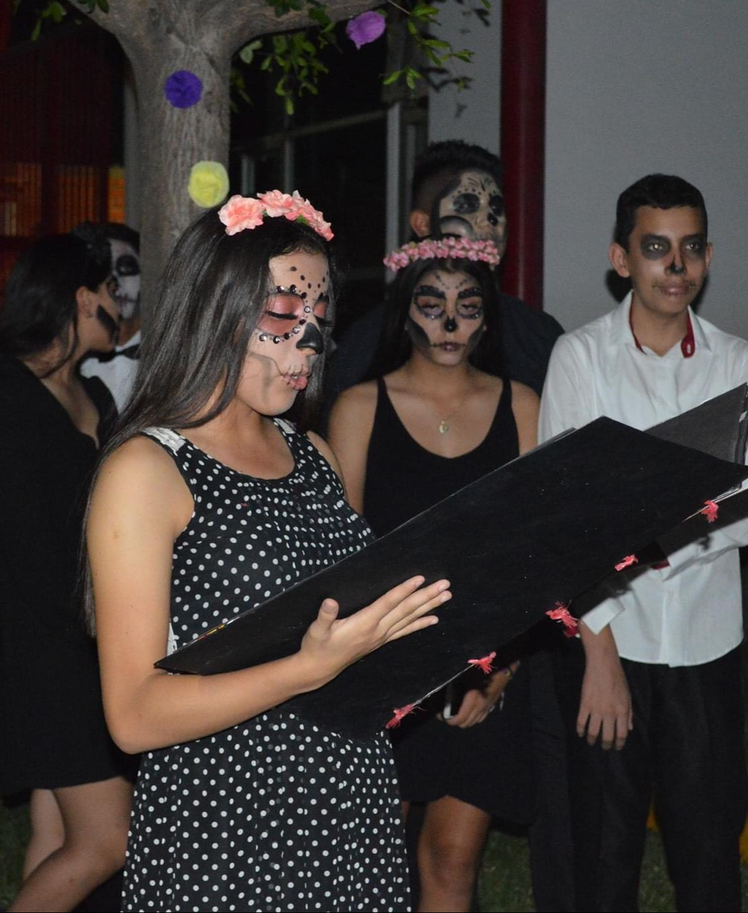

CAFÉ LITERARIO
- "Esta actividad fue realizada con el fin de interesar con la lectura y la actividades artísticas, a los alumnos del colegio anglo y el publicó en general, .
- Lo que nuestro grupo organizó, fue la elaboracion de un libro con cuentos de terror, redactedos por nosostros mismos.
- Se llevó a cabo el 30 de Octubre del 2019, y se decoró desde el marco de nuestro cuento, hasta nuestro espacio de patio donde estaríamos instalados.
- Tuvimos la oportunidad de ir caracterizados de catrinas y catrines. Al final cada quien leyó su historia hacia los familiares que estaban presentes.